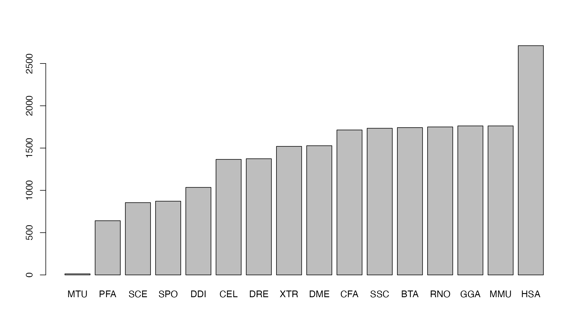
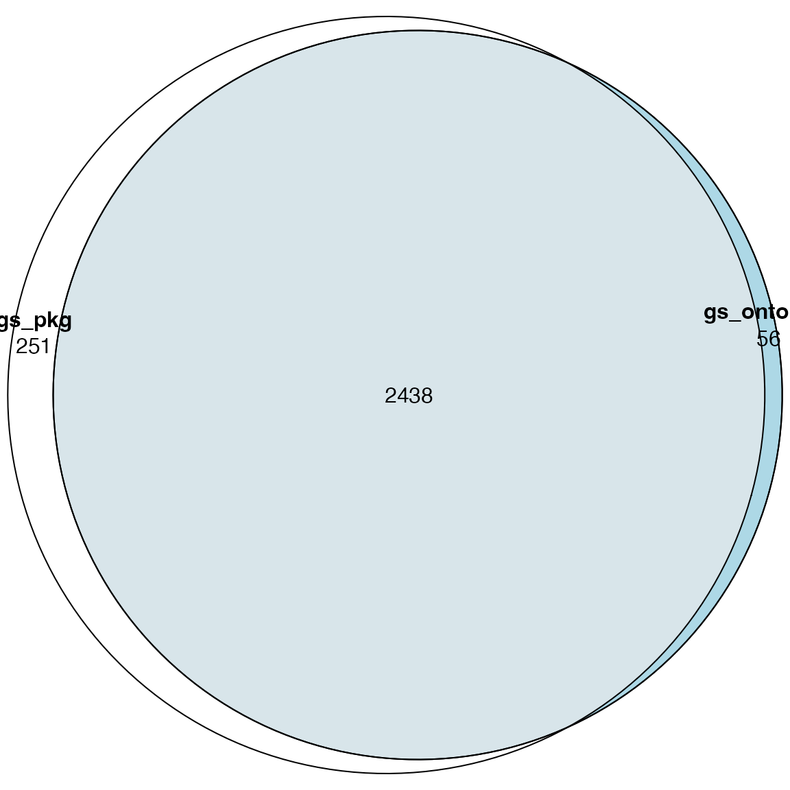
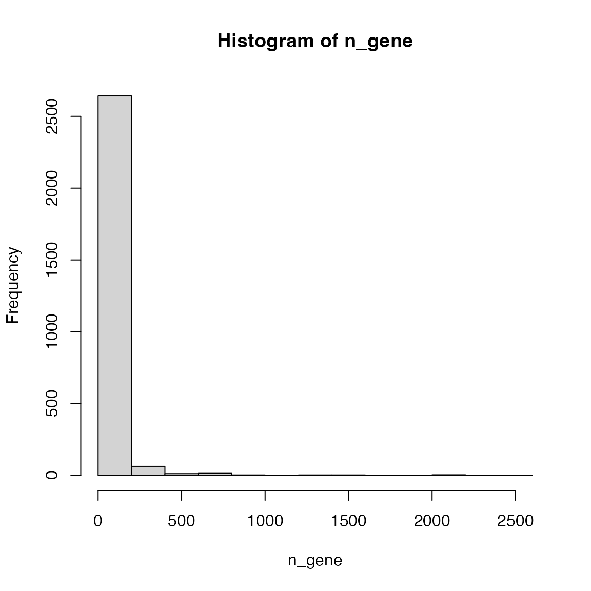
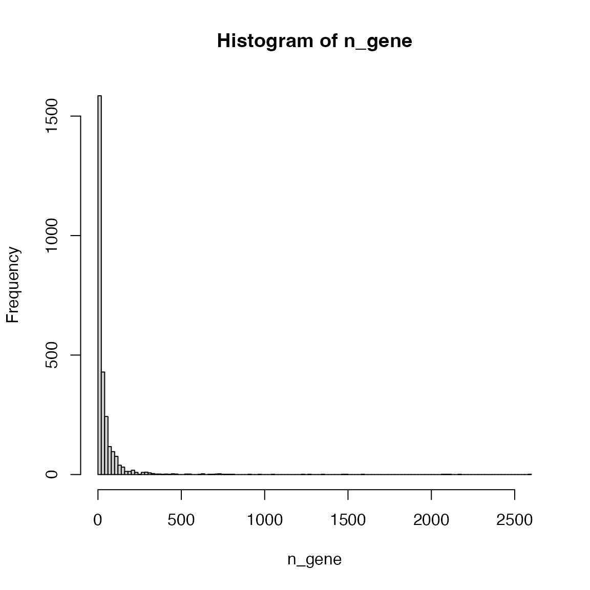

Topic 1-04: Reactome gene sets
Zuguang Gu z.gu@dkfz.de
2025-05-31
Source:vignettes/topic1_04_Reactome.Rmd
topic1_04_Reactome.RmdReactome is another popular pathway database. It organizes pathways in a hierarchical manner, which contains pathways and sub pathways or pathway components. The up-to-date pathway data can be direclty found at https://reactome.org/download-data (Mapping Files -> Identifier mapping files -> NCBI to All pathways)
reactome.db
There is a reactome.db package on Bioconductor. But note it is not an official Bioconductor data package.
The basic information of the data:
library(reactome.db)
reactome.db## ReactomeDb object:
## | DBSCHEMA: REACTOME_DB
## | DBSCHEMAVERSION: 89
## | SOURCENAME: Reactome
## | SOURCEURL: https://reactome.org/download/current/databases/gk_current.sql.gz
## | SOURCEDATE: 19997
## | Supporting package: AnnotationDbi
## | Db type: ReactomeDbThe “SOURCEDATE” might be the version of the data.
In reactome.db, the important objects are
-
reactomePATHID2EXTIDcontains mappings between reactome pathway IDs and gene EntreZ IDs -
reactomePATHID2NAMEcontains pathway names
## DB_ID gene_id
## 1 R-HSA-109582 1
## 2 R-HSA-114608 1
## 3 R-HSA-168249 1
## 4 R-HSA-168256 1
## 5 R-HSA-6798695 1
## 6 R-HSA-76002 1## DB_ID
## 1 R-BTA-1971475
## 2 R-BTA-1369062
## 3 R-BTA-382556
## 4 R-BTA-9033807
## 5 R-BTA-418592
## 6 R-BTA-392170
## path_name
## 1 Bos taurus: A tetrasaccharide linker sequence is required for GAG synthesis
## 2 Bos taurus: ABC transporters in lipid homeostasis
## 3 Bos taurus: ABC-family proteins mediated transport
## 4 Bos taurus: ABO blood group biosynthesis
## 5 Bos taurus: ADP signalling through P2Y purinoceptor 1
## 6 Bos taurus: ADP signalling through P2Y purinoceptor 12In the previous code, we use the function toTable() to
retrieve the data as a data frame. You can also try
as.list() on the two objects and compare the output.
Reactome contains pathway for multiple organisms. In the reactome ID,
the second section contains the organism, e.g. in previous output
HSA.
##
## MTU PFA SCE SPO DDI CEL DRE XTR DME CFA SSC BTA RNO GGA MMU HSA
## 13 641 855 872 1035 1366 1374 1520 1528 1714 1734 1742 1750 1762 1762 2711
Directly get data from the database
If you are not sure whether reactome.db provides the most up-to-date data, we can directly process the original data fro reactome database.
download.file("https://reactome.org/download/current/NCBI2Reactome_All_Levels.txt", destfile = "NCBI2Reactome_All_Levels.txt")
tb = read.table("NCBI2Reactome_All_Levels.txt", sep = "\t", comment.char = "")
head(tb)## V1 V2 V3
## 1 1 R-HSA-109582 https://reactome.org/PathwayBrowser/#/R-HSA-109582
## 2 1 R-HSA-114608 https://reactome.org/PathwayBrowser/#/R-HSA-114608
## 3 1 R-HSA-168249 https://reactome.org/PathwayBrowser/#/R-HSA-168249
## 4 1 R-HSA-168256 https://reactome.org/PathwayBrowser/#/R-HSA-168256
## 5 1 R-HSA-6798695 https://reactome.org/PathwayBrowser/#/R-HSA-6798695
## 6 1 R-HSA-76002 https://reactome.org/PathwayBrowser/#/R-HSA-76002
## V4 V5 V6
## 1 Hemostasis TAS Homo sapiens
## 2 Platelet degranulation TAS Homo sapiens
## 3 Innate Immune System TAS Homo sapiens
## 4 Immune System TAS Homo sapiens
## 5 Neutrophil degranulation TAS Homo sapiens
## 6 Platelet activation, signaling and aggregation TAS Homo sapiensRestrict to human pathways. Note do not use column 6 for filtering.
tb2 = tb[grepl("HSA", tb[, 2]), ]The gene sets
gs = split(tb2[, 1], tb2[, 2])It is better to ensure Entrez IDs are stored as characters and genes are unique
gs = lapply(gs, function(x) unique(as.character(x)))Pathway names:
Use simona to manually construct gene sets
The file we used “NCBI2Reactome_All_Levels.txt” has the
description
“All levels of the pathway hierarchy” from the reactome website. Note
pathways are organized in a hierarchical way (an ontology) where if a
gene is annotated to a pathway, it should be annotated to all its
ancestor pathways. For most gene annotations on ontologies (such as GO),
genes are only annotated to the lowest terms in the ontology. We ask, in
“NCBI2Reactome_All_Levels.txt”, are all genes correctly assigned to all
ancestor pathways?
Let’s manually create an ontology object and merge gene annotations.
Read the hierarchical relations of pathways. Note the first column contains parent pathways and the second column contains child pathways:
library(simona)
df = read.table("https://reactome.org/download/current/ReactomePathwaysRelation.txt", sep = "\t")
df = df[grepl("HSA", df[, 1]) & grepl("HSA", df[, 2]), ]
head(df)## V1 V2
## 10760 R-HSA-109581 R-HSA-109606
## 10761 R-HSA-109581 R-HSA-169911
## 10762 R-HSA-109581 R-HSA-5357769
## 10763 R-HSA-109581 R-HSA-75153
## 10764 R-HSA-109582 R-HSA-140877
## 10765 R-HSA-109582 R-HSA-202733Create an ontology object with simona and also add gene annotations.
dag = create_ontology_DAG(df[, 1], df[, 2], annotation = gs)
dag## An ontology_DAG object:
## Source: Ontology
## 2770 terms / 2816 relations
## Root: ~~all~~
## Terms: R-HSA-1059683, R-HSA-109581, R-HSA-109582, R-HSA-109606,
## ...
## Max depth: 12
## Avg number of parents: 1.02
## Avg number of children: 1.03
## Aspect ratio: 110.5:1 (based on the longest distance from root)
## 112:1 (based on the shortest distance from root)
## Annotations: 5365 items
## 3569, 3570, 3572, 3716, ...term_annotations() automatically merges genes for
ancestor pathways:
gs3 = term_annotations(dag, setdiff(dag_all_terms(dag), "~~all~~"))
gs3 = gs3[sapply(gs3, length) > 0]For this method, GSEAtopics has a helper function
load_reactome_genesets() that wraps the code above:
lt = load_reactome_genesets("HSA")
lt$name # pathway names
lt$gs # pathway gene setsCompare the three methods
Now we have three different ways to get Reactome pathway gene sets, let’s compare their consistency.
Let’s first rename the three types of gene sets objects.
gs_web = gs
gs1 = as.list(reactomePATHID2EXTID)
gs_pkg = gs1[grepl("HSA", names(gs1))]
gs_ontology = gs3The overlap:
library(eulerr)
plot(euler(list(gs_pkg = names(gs_pkg),
gs_web = names(gs_web),
gs_ontology = names(gs_ontology))), quantities = TRUE)
gs_web and gs_ontology have the same set of
pathways.
## [1] TRUEAnd we compare the numbers of genes in pathways:
cn = intersect(intersect(names(gs_pkg), names(gs_web)), names(gs_ontology))
n1 = sapply(gs_pkg[cn], length)
n2 = sapply(gs_web[cn], length)
n3 = sapply(gs_ontology[cn], length)
par(mfrow = c(1, 2))
plot(n1, n2, log = "xy", xlab = "reactome.db", ylab = "website")
plot(n2, n3, log = "xy", xlab = "website", ylab = "ontology")Conclusion: if you use reactome pathways, use method 2 or 3.
Practice
Practice 1
Make the distribution of the numbers of genes in Reactome pathways (use human).
Print the names of pathways with numbers of genes > 2000.
library(GSEAtopics)
lt = load_reactome_genesets("HSA")
n_gene = sapply(lt$gs, length)
hist(n_gene)
Make the intervals smaller:
hist(n_gene, nc = 100)
Pathways more than 2000 genes:
n_gene[n_gene > 2000]## R-HSA-1430728 R-HSA-162582 R-HSA-1643685 R-HSA-168256 R-HSA-392499
## 2178 2597 2084 2062 2103Their names:
lt$name[ names(n_gene[n_gene > 2000]) ]## R-HSA-1430728 R-HSA-162582 R-HSA-1643685
## "Metabolism" "Signal Transduction" "Disease"
## R-HSA-168256 R-HSA-392499
## "Immune System" "Metabolism of proteins"If you go to https://reactome.org/PathwayBrowser/, these big pathways correspond to the pathway clusters on the top level.